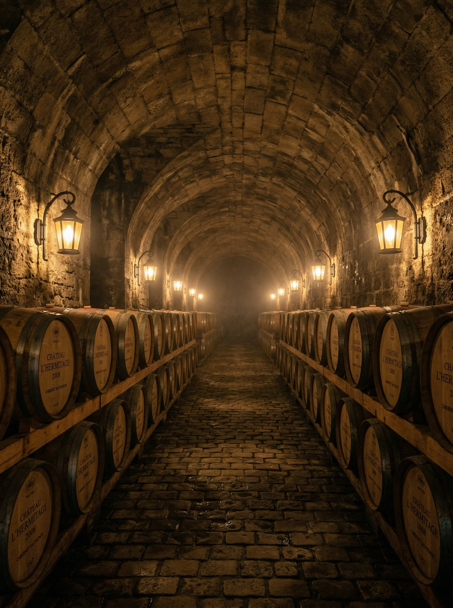
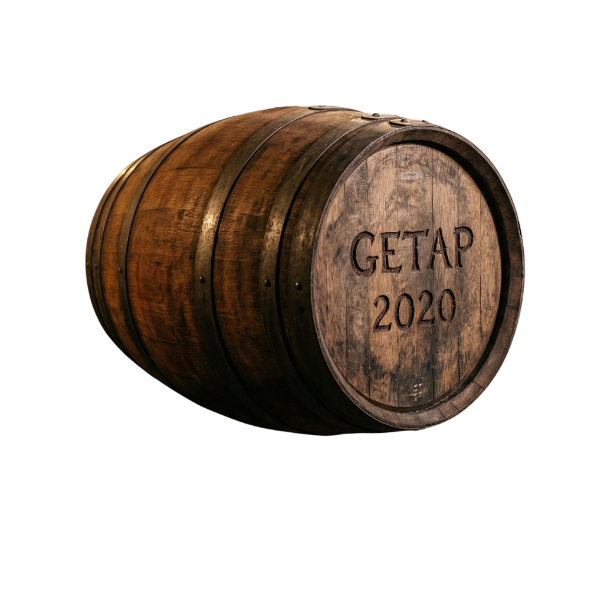
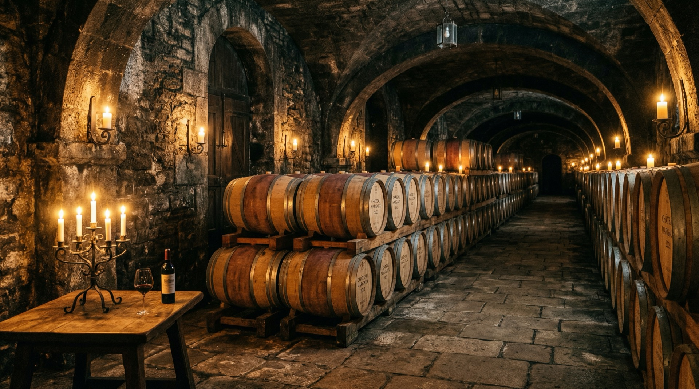
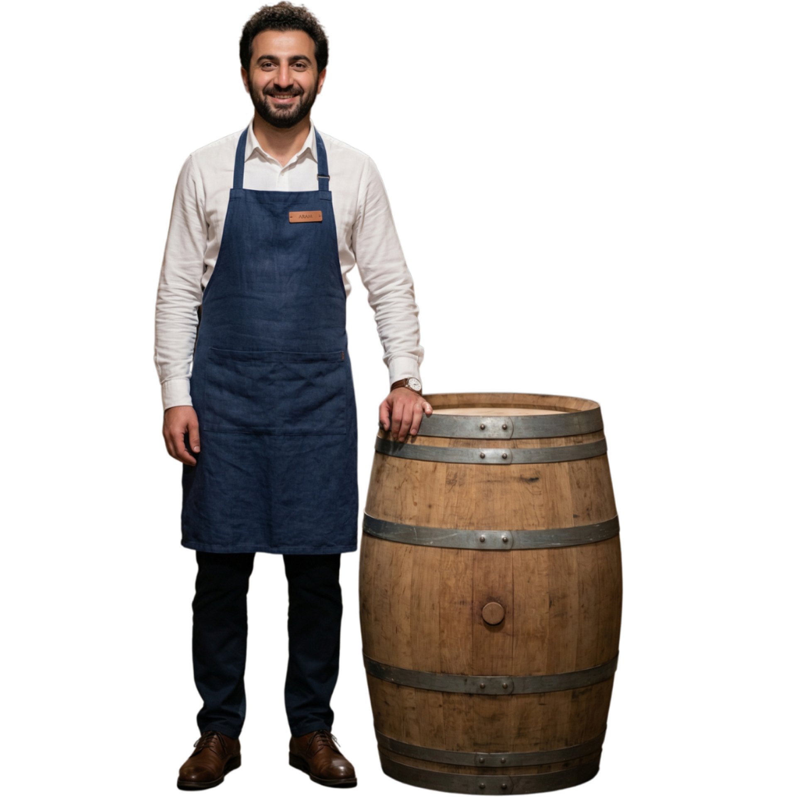
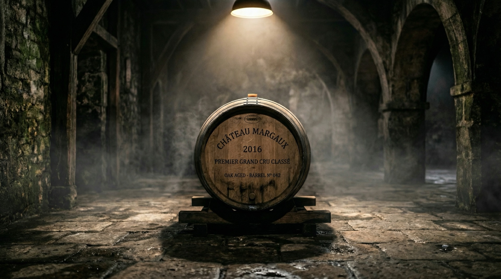
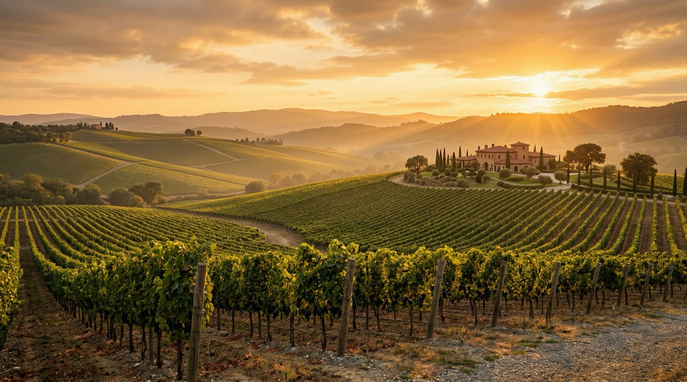
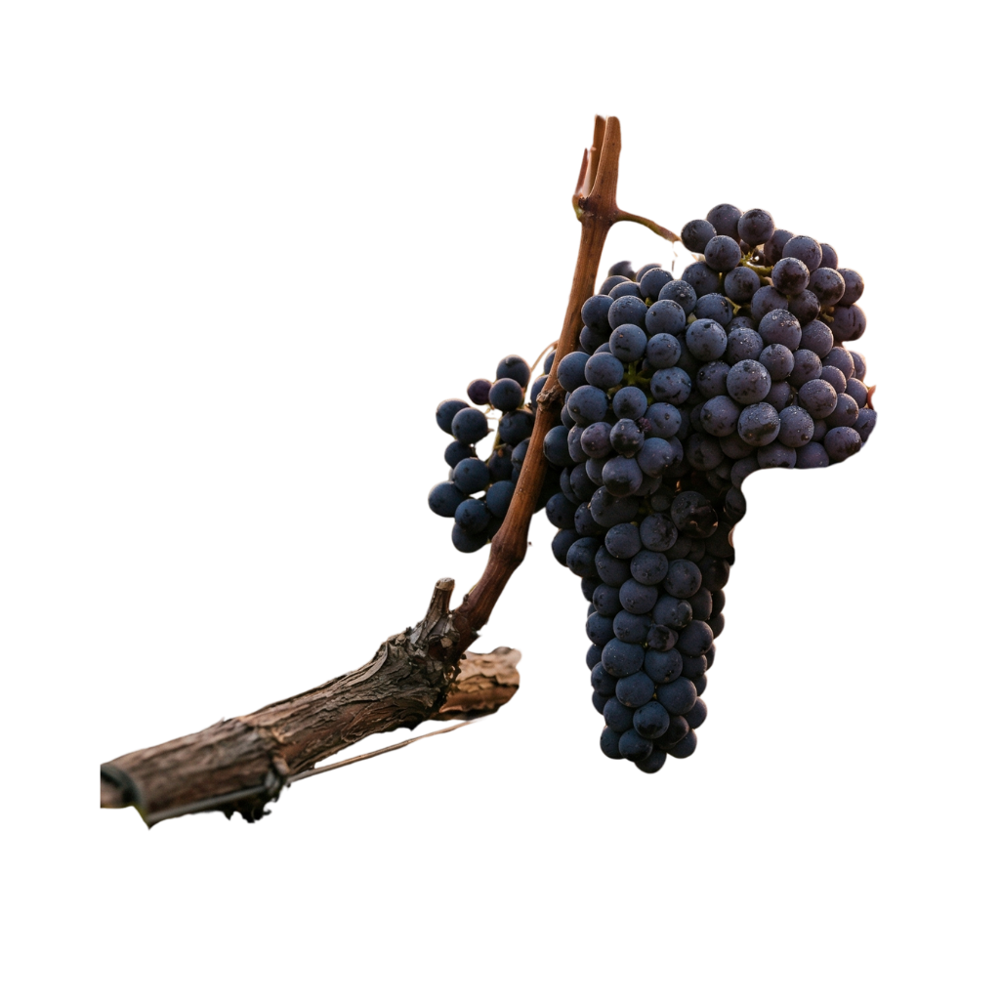

Здесь рождается
легенда
Каждая бутылка GETAP начинается здесь —
в каменном погребе, где время течёт иначе.
Тишина. Темнота. Работа.
Мы не торопим вино. Мы ждём.
Каждая бутылка GETAP начинается здесь —
в каменном погребе, где время течёт иначе.
Тишина. Темнота. Работа.
Мы не торопим вино. Мы ждём.


Французский дуб Аллье — единственный,
который позволяет вину дышать так, как нам нужно.
Каждую бочку Арам выбирает лично.
Каждую пробует сам. Каждый месяц.

24 месяца выдержки · 1200 пронумерованных бутылок
Каберне Совиньон · Геленджик · Россия
«Виноград не врёт.
Если ты сделал всё правильно —
бочка сама расскажет об этом.»

Пронумерованы вручную. Сертифицированы.
Каждая хранит в себе этот погреб,
эти руки и этот урожай.
Осталось: 847 из 1200
Выбрать свою бутылку →